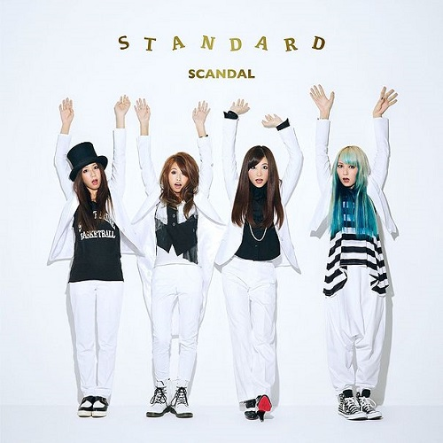
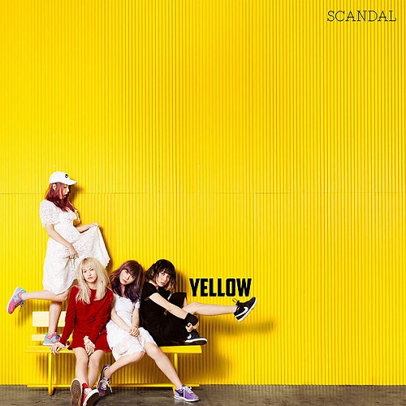
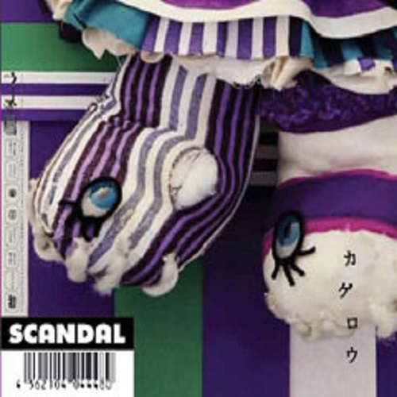
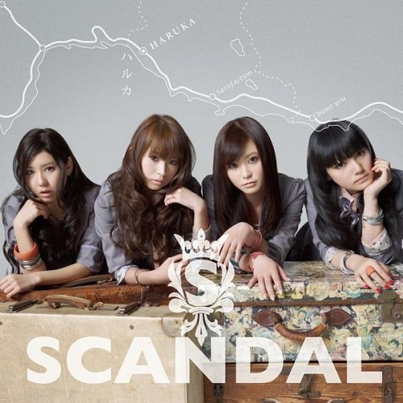
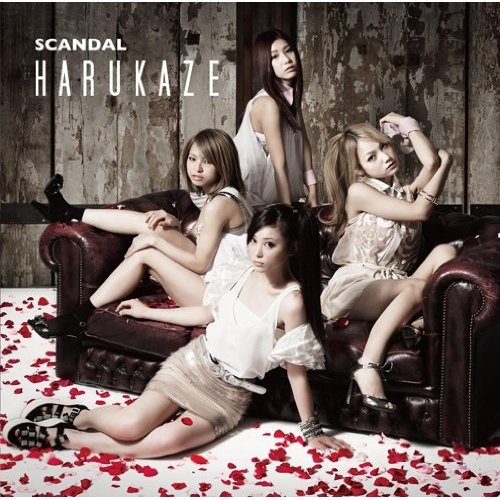
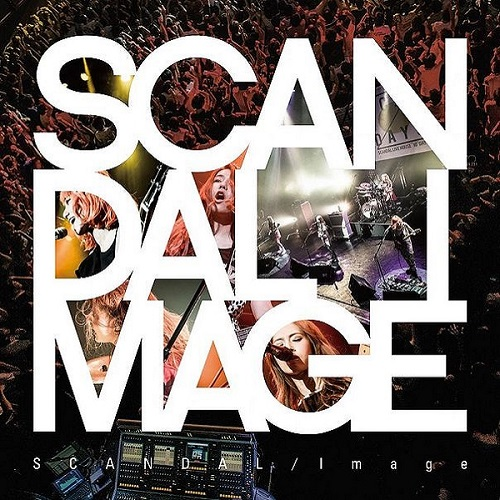

-

BEST★SCANDAL
Octubre 21, 2009
-

Temptation box
Agosto 11, 2010
-

BABY ACTION
2011
-

Queens are trumps -切り札はクイーン-
Septiembre 26, 2012
-

STANDARD
Octubre 2, 2013
-

Hello World
Diciembre 3, 2014
-

Yellow
Marzo 2, 2016
-

YAH!YAH!YAH!HELLO SCANDAL～まいど!スキャンダルです!ヤァヤァヤァ!～
Agosto 8, 2008
-

R-Girl's Rock!
Noviembre 17, 2010
-

Space ranger
Marzo 03, 2008
-

Koi moyou
Abril 04, 2008
-

Kagerou
Mayo 05, 2008
-

Sakura GOODBYE
Marzo 4, 2009
-

少女S
Junio 17, 2009
-

夢見るつばさ
Octubre 14, 2009
-

瞬間センチメンタル
Febrero 3, 2010
-

太陽と君が描くSTORY
Junio 2, 2010
-

涙のリグレット
Julio 28, 2010
-

スキャンダルなんかブッ飛ばせ
Octubre 6, 2010
-

Pride
Febrero 9, 2011
-

ハルカ
Abril 20, 2011
-

Love survive
Julio 27, 2011
-

Harukaze
Febrero 22, 2012
-

太陽スキャンダラス
Julio 11, 2012
-

ピンヒールサーファー
Septiembre 12, 2012
-

会わないつもりの、元気でね
Mayo 22, 2013
-

下弦の月
Agosto 14, 2013
-

Over drive
Septiembre 18, 2013
-
Departure
Abril 23, 2014
-

夜明けの流星群
Julio 16, 2014
-

Image
Noviembre 19, 2014
-
Stamp!
Julio 22, 2015
-
Sisters
Septiembre 9, 2015
-

テイクミーアウト
Julio 27, 2016
-

SCANDAL First Live -Best SCANDAL 2009-
Junio 30, 2010
-

SCANDAL Anime
Septiembre 18, 2010
-

Everybody Say Yeah! -Temptation Box Tour 2010- Zepp Tokyo
Marzo 16, 2011
-

Video Action
Septiembre 28, 2011
-

SCANDAL Japan Title Match Live 2012 -SCANDAL vs Budokan-
Agosto 22, 2012
-

SCANDAL Osaka-jo Hall 2013 "Wonderful Tonight"
Julio 24, 2013
-

SCANDAL Arena Live 2014 "Festival"
Enero 14, 2015
-

Documentary Film "Hello World"
Diciembre 23, 2015